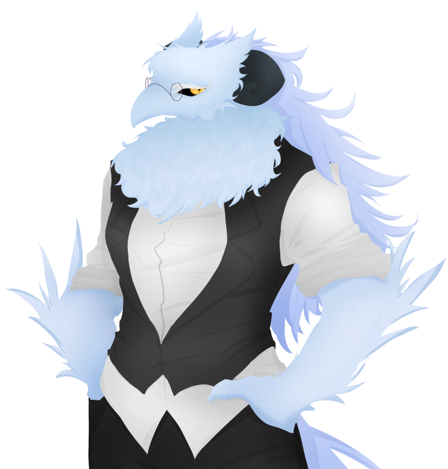

| 테냐 Tenya |
|
|  | |
| 별칭 | 최전선 군의관, 빙조 |
| 나이 | (외관 상) 42세 |
| 종족 | 조류 수인? |
| Sex / Gender | 여성 / 시스젠더 |
| 직업 | 바리스타 |
| 키 | 204cm |
| 몸무게 | 98kg |
| 혈액형 | B형 |
| 생일 | 1월 5일 |
FNI
1. 외형
온 몸이 부드러운 빙하색 털 투성이다. 머리 뒷편으로는 살짝 더 푸른 색의 뻣뻣한 깃털이 허리까지 흘러내려와 머리카락처럼 보인다.
전체적으로 커다란 조류 같은 인상. 다만 뾰족하게 튀어나온 부리처럼 보이는 부위마저도 털에 덮혀있고, 머리 위로는 귀의 형태와 유사하게 머리깃이
솟아나있다. 또한, 머리깃 바로 아랫부분에 튀어나온 어두운 잿빛의 둥글게 꼬인 뿔이 특징적이다. 눈동자는 샛노란 색이며, 공막은 새까맣다.
부리로 보이는 부분에 동그란 철테 안경을 걸쳐 썼다.
목 바로 아래의, 가슴팍의 털은 유난히 북실하다. 자주 엉키고 걸리지만 자를 생각은 없는 모양이다. 팔뚝은 털에 뒤덮혀있음에도
충분히 두꺼워보이며, 손등부터 팔꿈치 부근까지 깃털들이 길게 자라나있다. 덕분에 옷은 항상 팔뚝 윗부분까지 걷고 있다. 역시나 탄탄한 다리를 타고
내려와 보면, 새의 다리와 같은 뿌연 회색의 발이 자리하고 있다. 발은 그의 신체에서 맨살의 노출이 유일하다시피 한 부위이다.
등 뒤로 날개를 펼쳐낼 수 있다는 것 같지만, 옷이 망가지기에 그 모습을 보여주지는 않는다. 옷의 뒷 트임 부분 사이에서부터 뿜어져나온 꼬리는
머리카락과 비슷한 색과 재질이다. 바닥에 끌릴 정도로 길어서, 바쁘게 움직일 때에도 꼬리에 흙먼지가 묻지 않도록 주의를 기울이고는 한다.
의복으로는 살짝 끼어보이는 셔츠와 베스트, 슬랙스를 입었다. 근무 중인 카페의 직원 복장이다. 신발은 발의 형태 때문인지 신지
않았다.
시원하게 떡 벌어진 어깨와 두꺼운 팔다리. 겉보기에는 깃털 때문에 부드러운 인상을 주지만, 실제로 만져보면 근육질로 딱딱하다.
2. 성격
[ 차분한 ]
매사에 굉장히 차분하다. 지나치게 과묵하다고 느껴질 정도. 정적이며, 소란 떠는 일 없이 고요한 성격이다.
타고난건지, 훈련된 무언가인지, 무언가에 놀라도 빠르게 진정하며 그 다음에 해야 할 행동에 대해 침착하게 생각한다. 눈치가 빠른 사람이라면
그와 행동을 함께 한지 하루도 되지 않아 풍겨오는 '군인스러움'을 느낄 수 있을 것이다.
" 괜찮습니다, 괜찮을겁니다. 진정하는 것이 우선입니다. "
[ 직설적인, 그러나 친절한 ]
좋은 청자임과 동시에 자신의 의견 또한 잘 드러낸다. 좋고 싫음을 뚜렷하게 나누고, 발언한다.
직설적인 면도 상당해서, 느낀 점을 바로바로 이야기 꺼내는 편이다. 그러나 타인의 마음을 헤아리는 심성이 깊기 때문에, 직설적인 그의 발언으로
인해 트러블이 일어나는 경우는 거의 없다. 설령 강압적인 언행을 하게 되더라도 모든 일은 필요에 의해서, 타인을 위하는 마음에서 흘러나온 말일
것이다.
" 그건 옳지 않습니다. 좋은 선택을 해주십시오. "
[ 이타적인 ]
항상 자기 자신보다는 타인을 위하는 태도를 유지한다. 딱딱하고 틀에 박힌 말투와 행동 뒤에 숨겨진 배려심과
이타심은 간혹 상대를 부담스럽게, 그리고 당황스럽게 만들 때마저 있다. 도움을 청하는 상대가 있다면 절대 거절하지 않는 것을 넘어서서 무리다,
싶은 일조차도 대담하게 저지르고만다.
" 필요한 게 있으시다면 언제쯤 말씀 주십시오. 힘 닿는 곳까지 돕고 싶습니다. "
3-1. 호불호
Like : 작은 동물, 스콘, 티타임, 독서 등
" 어떠한 나라는 티타임을 가지는 데에 하루 네 시간 정도를 쓴다고 합니다. "
Dislike : 규율, 비린내 등
" 사실, 군은 별로 적성에 맞지 않았습니다. "
작은 소동물을 좋아한다. 그의 기준에서 작고 귀여운 동물들을 애호한다. 커다란 편인 그의 시각에서 보았을 때, 그리고 수준이 높지 않은 그의
시각에서 보았을 때, 사실상 대부분의 동물들을 모두 좋아한다. 인간 또한 상대적으로 작고 피부가 말랑하다는 점에서 귀엽게 여긴다. 다만 다른
동물들을 대놓고 귀여워하며 하대하지는 않고, 머릿속에서만 조용히 좋아하는 편이다. 어찌어찌 돌려 말하다가 쓰다듬는 것을 허락받았을 때에는 아주
기뻐한다.
군에 몸 담구었을 때의 안 좋은 기억 때문인지, 꽉 막힌 규율과 규정을 싫어한다. 물론 살아가는 데에 필수적인 최소한의 법과 규칙은
준수하며 옹호하지만, 사람들의 자유의지를 해하거나 지나치게 보수적인 규율에는 거부감을 표한다.
3-2. 취미
취미는 독서이다. 주말에는 가끔 카페에서 독서 모임을 열 정도로 책을 좋아한다. 책을 읽고 토론한다기보다는, 단순히 모여서 담소를 나누고 차와 함께 책에 관한 잡담을 하는 느긋한 모임이다. 책들 중에서도 차분하게 읽을 수 있는 수필이나 시, 아니면 인문학을 가장 좋아한다. 개인 블로그에도 독후감을 작성하여 포스팅하고 있다.
3-3. 직업
과거에는 군인이었다. 군의관이었으며, 내전 중이라 최전선에서 밤낮없이 일하는 날이 많았던 편. 스스로가 원해서 일하던 것은 아니었으며,
그의 깊은 비밀과 관계 있다는 듯 하다. 내전 지역에서 복무 도중에 소중한 인연을 만나게 되고, 그것을 계기로 불명예 전역하였다.
지금은 내전 지역에서 멀리 떨어진 타국에서 소중한 친우와 함께 작은 카페를 운영하며 취미 생활을 즐기며 소소하게 살아가고 있다.
그는 바리스타 일을 하고 마리나가 점장, 처럼 보이지만 거의 함께 카페를 운영하고 있다. 특히나 회계나 카페 내부 인테리어 등은 테냐가 도맡아
한다. 주말에 문을 일찍 닫은 날, 카페의 한 켠에서 독서 모임이나 토론회를 열기도 한다. 군인 때에 비해 직업만족도가 아주 높다고 한다.
3-4. 습관
습관 수준으로, 언제나 틀에 잡힌 존댓말과 함께 '다나까 체'를 사용한다. 높낮이가 일정하고 항상 침착한 말투. 일상의 움직임 또한 전체적으로 절도있고 각이 잡힌 움직임으로 가득 차있다. 때로는 답답해보이고, 보는 사람으로하여금 긴장하게 만들 정도의 절도있는 모습이다. 나름대로의 예의라고 생각하는지, 이미 몸에 배어든 습관을 굳이 고치려 들지는 않는다.
6. 주변 관계
 마리나 니시어스 - 군 복무 도중 만난 사람으로 지금은 함께 카페를 운영 중이다. 거의 친할머니라
여길 정도로 친밀하게 느끼고 있다.
마리나 니시어스 - 군 복무 도중 만난 사람으로 지금은 함께 카페를 운영 중이다. 거의 친할머니라
여길 정도로 친밀하게 느끼고 있다.
레테 - 전 상사. 거의 강제로 군에 묶어두었던 기억 때문에 매우 싫어한다.